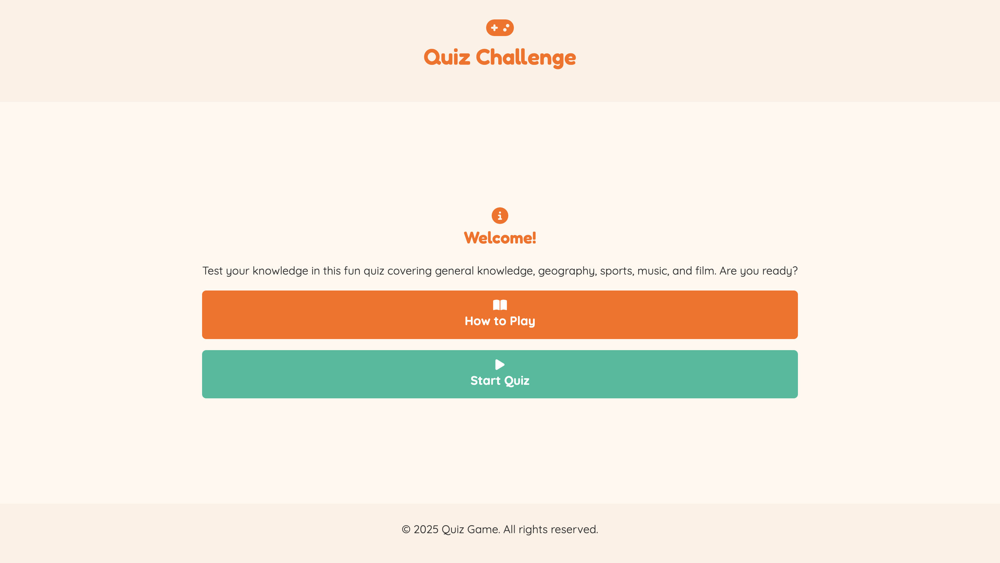
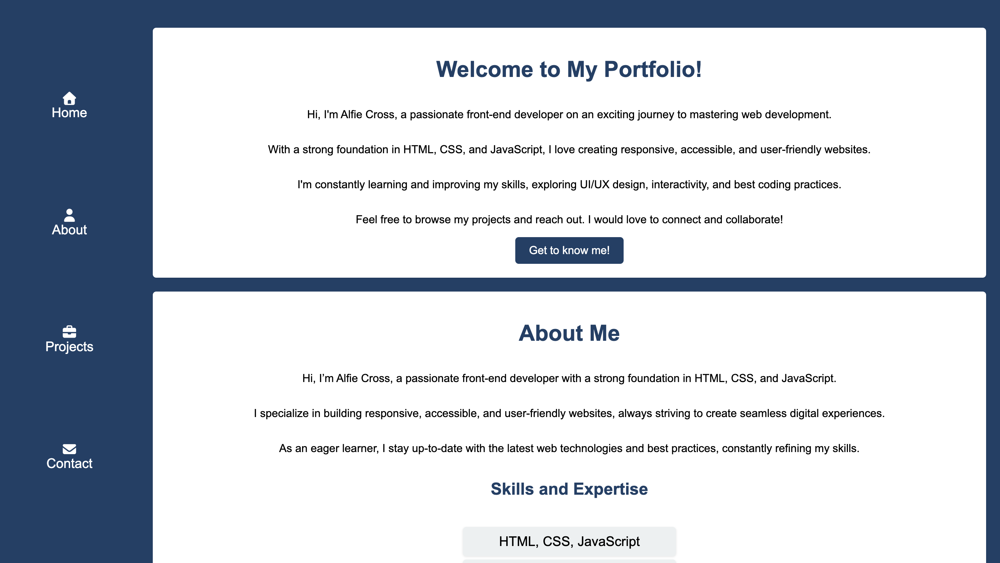

HTML5
Semantic page structure, accessibility and clean markup.
Hi, I’m Alfie
I build clean, responsive and accessible websites using HTML, CSS and JavaScript. I’m currently growing my skills and building projects to become a professional front-end developer.
A little bit about my journey into front-end development.
I’m a junior front-end developer focused on building responsive websites with HTML, CSS and JavaScript. I enjoy creating user-friendly layouts, improving accessibility and writing clean code that is easy to understand.
My goal is to continue improving my technical skills, build stronger portfolio projects and work towards landing a junior front-end developer role.
The main tools and technologies I am currently using.
Semantic page structure, accessibility and clean markup.
Responsive layouts, Flexbox, Grid, styling and animations.
DOM manipulation, interactive features and basic app logic.
Version control, commits, repositories and GitHub Pages.
Three projects that show my current front-end development skills.

A responsive café website built with HTML, CSS and JavaScript. It includes menu sections, product cards and interactive features.

An interactive quiz website with questions, scoring and category-based gameplay. This project helped me practise JavaScript logic.

A simple portfolio website designed to show off my skills for the first time as a front-end developer. It focuses on basic HTML structure, CSS styling and a bit of JavaScript for interactivity.
How I am documenting and improving this portfolio over time.
This portfolio is being built and improved using Visual Studio Code, Git and GitHub. I am documenting my progress with clear commit messages, project updates and a README file that explains the purpose, features and development process.
View GitHub ProfileGet in touch about junior front-end developer opportunities.